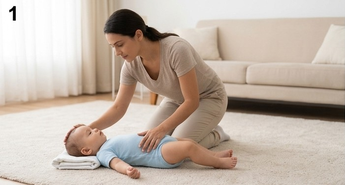
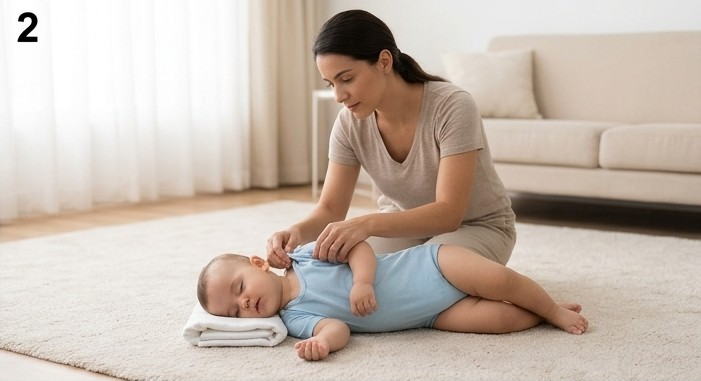
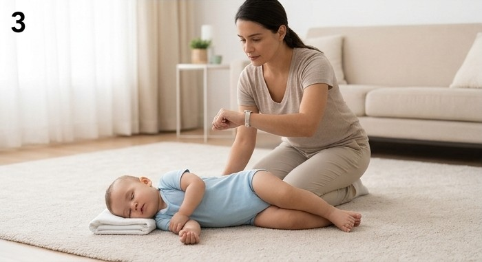
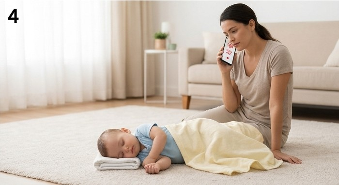

Deite o bebê imediatamente em uma superfície plana, firme e segura (como o chão sobre um tapete ou colchonete, ou no centro de uma cama grande sob supervisão constante) para evitar que caia.
Afaste brinquedos, móveis, objetos duros ou pontiagudos de perto do bebê e apoie suavemente a cabeça dele em algo macio e fino (como uma fralda dobrada) para evitar impactos.

Coloque o bebê cuidadosamente deitado de lado (posição lateral de segurança) para facilitar a respiração e evitar que ele engasgue caso salive ou vomite durante a crise.
Afrouxe roupas apertadas, especialmente ao redor do pescoço e do tórax, e retire babadores, gorros ou cobertores pesados.

Olhe no relógio ou inicie um cronômetro assim que a convulsão começar — a duração exata é uma informação fundamental para a equipe médica.
Observe como o bebê se comporta (movimentos dos braços e pernas, desvio do olhar, rigidez do corpo, alteração na cor dos lábios ou se há febre associada) para relatar ao médico depois.

Ligue imediatamente para o SAMU 192 (ou leve o bebê ao pronto-socorro assim que a crise cessar) sempre que for a primeira convulsão do bebê, se a crise durar mais de 5 minutos, se repetir logo em seguida ou se houver dificuldade para respirar e lábios arroxeados.
Após o fim dos tremores, o bebê costuma ficar muito sonolento, choroso ou confuso. Mantenha-o de lado, acolhido e em observação contínua até a avaliação médica.

Não coloque os dedos, panos, colheres ou qualquer objeto dentro da boca do bebê — ele não vai engolir a língua, e tentar abrir a boca pode machucá-lo ou causar engasgo.
Não segure nem tente conter à força os movimentos dos braços e pernas do bebê durante a convulsão.
Não dê água, leite, chá ou medicamentos (inclusive antitérmicos) pela boca durante a crise ou enquanto o bebê ainda estiver sonolento.
Não dê banho frio ou coloque o bebê sob água corrente durante a convulsão, mesmo se suspeitar de febre alta.